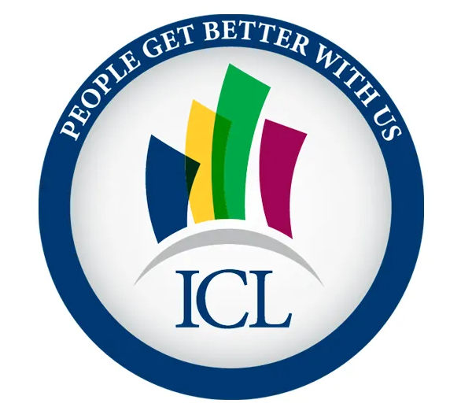
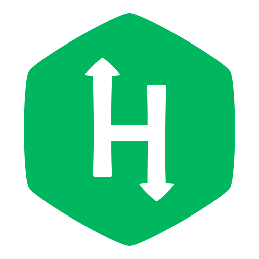

AI Engineer
Full Stack Developer

Michael Brancazio

ICL, Brooklyn NY
NewYork–Presbyterian
IQVIA, Boston MA
NewYork–Presbyterian
NewYork–Presbyterian
NewYork–Presbyterian
Current Experience
Present
- Develop and implement a machine learning predictive model in
Python to predict healthcare reimbursement likelihood,
enhancing
vendor referral efficiency and data-driven decision-making
within NYP's Revenue Cycle Department
- Projected to reduce unnecessary vendor referrals by 30%, increase reimbursement rates on referred cases by 15%, and potentially save ~$500,000 annually through optimized vendor agreements and reduced operational costs
- Engineer in-house LLMs leveraging RAG framework and
vector-based retrieval to assist front-end users and
developers in navigating proprietary data models, data
definitions, and dashboards
- Create a full-stack web resource (HTML, CSS, Javascript) that aggregates all Access-to-Care department data, integrating a custom chatbot trained on department-specific documentation and data models
- Scale tool & model across multiple teams and departments, facilitating broader organizational adoption and enhancing enterprise-wide efficiency; leverage Azure Machine Learning and Azure Cognitive Services to deploy predictive models
- Worked in agile sprints to rapidly develop, test, and deploy chatbot models with data literacy programs
- Fine-tune open-source models (Gemma & Llama) using QLoRA on proprietary organizational data
- Create CLI tool for developers to query data governance metadata, including documentation, definitions, and owners
- Transition of Tableau dashboards to Microsoft PowerBI, from visualizations to translation of calculations to DAX format
- Champion a data-driven culture by deploying organization-wide data literacy and AI upskilling programs, focusing on predictive analytics, machine learning, and data visualization
- Partner with Clinical and IT teams to identify high-impact use cases for artificial intelligence, including natural language processing (NLP), deep learning, and computer vision applications
- Lead training workshops and curate digital resources to empower staff in leveraging big data, advanced analytics, and AI tools for data-informed decisions
- Serve as a strategic advisor on AI/ML innovations and emerging technologies such as augmented intelligence and automated data workflows, providing leadership insights for scalable AI solutions
- Stewarded Snowflake migration and adaptation, creating Snowflake AI Skills, MCPs, and internal trainings around Snowflake Cortex AI, CoCo, and Cowork
Jan 2025
- Rollout in-house data warehousing initiative, 'JupiterGOLD',
along with manage proper data governance policy
- Establish standard practices and templates for all reporting tables
- Build in-query error reporting with QA checks delivered via email to database administrators
- Create checklist for table creation, production server requirements, and data mart/data source standards
- Implemented star and snowflake schema design for Palliative Care data marts, creating optimized fact and dimension tables that reduced query complexity while maintaining granular patient outcome metrics
- Utilize Epic Clarity data model for custom reporting on various enterprise initiatives (i.e., Opioid guideline monitoring, Parkinson's patient registry, Press Ganey score assessment)
- Collaborate on the creation of a shared resource guide & formal documentation for all in-house data projects, scripts, and dashboards
- Communicate with organizational stakeholders on business case for each report
- Ensure proper QA/QC procedures are formalized and checked
- Establish a working list of FAQs and other communication documents via SharePoint (white papers, etc)
Present
- Perform descriptive and diagnostic analytics highlighting historical
trends and KPIs for pharmaceutical business reviews
- Creation and modification of complex SQL queries to identify seasonal product trends and outliers that have significant financial implications for clients
- Utilization of Power Query within Excel for sourcing SQL data for simple reporting needs and data modeling via Power Pivot
- Create projections that optimize reimbursement programs that improved patient utilization while maintaining a positive ROI
- Present year-end as well as quarterly business reviews to high-profile clients (Pfizer, Novartis, AbbVie, etc.)
- Build and manage close relationships with clients providing them with customized analytics, reports, and presentations
- Employ Microsoft PowerBI for the automation of reports and building of dashboards for clients
- Implement new predictive analytics to measure transactions and spend projects on a monthly, quarterly, and yearly basis
- Manage and lead 3 analysts; head Machine Learning & Forecasting
initiative within PAAS
- Build machine learning forecasting models tailored to each product, brand, and client; utilize Prophet and Plotly
- Utilize Prophet, Plotly, and Tkinter to create user-friendly tools for analysts
- Automate Accumulator and Maximizer Solutions with SQL SPROCs (Stored Procedures), reducing concurrent server load and manual analyst querying by 90%
- Greenfield a vector-based developer-facing chatbot to streamline data governance and schema navigation
- Lead AI strategy, implementation, and adoption by integrating Cursor IDE (and CLI), Copilot, Claude Code, and OpenAI Codex into team workflows; organized shared repository of context for consistent business logic and generative output
- Engineered a production ready multi-agent execution harness using LangGraph and the Cursor SDK, enabling proprietary use across analytics teams and reducing AI tooling costs by 66%
Previous Experience
Apr 2022
- Automate financial reports and analysis of monthly finances for 9 hospitals using Tableau dashboards
- Collaborate with enterprise data warehouse, data governance, and business teams on data quality issues
- Organize complex data modeling, data manipulation, and visualizations for numerous revenue cycle projects
May 2021
- Lead transition of monthly financial report generation from Excel into Python
- Utilize Pandas, NumPy, and PETL to create and generate cleaner data pipelines and reports
- Calculate key financial performance metrics (KPIs), including NCR, RAO, and TPRR
- Convert a 3-day manual process into a 30-minute automated process, reducing time by greater than 90%
Jul 2019
- Help open new East New York Hub; participate in crucial initial processes and structuring of operations
- Manage healthcare facility of 200+ staff housing clinics and offices, as well as oversee day-to-day operations
- Lead daily conferences to collaborate on issues & goals; communicate regularly with executive team on company vision
- Create, maintain, and interpret analytical building reports from the BMS (Building Management System)
- Create, design, and implement Temperature Reporting System (TRS) backend and UI & Intrasite Homepage for both the tracking and analysis of staff moral as well as improving communication and systematic information flow
Consulting Experience
Mar 2027
- Centralize ambient voice data across the organization and establish the data governance around it
- Construct consolidatory data models that bring every ambient voice vendor onto a shared structure
- Build a comprehensive unified Power BI dashboard incorporating all ambient voice vendors
- Spearhead an in-house LLM companion tool for all things voice data
Jun 2023
- Work closely with clients to create tailored analytic solutions to improve business processes
- Help clients understand their business better by identifying trends in the data
- Tailor analytics, dashboards, and visualizations to personalize business solutions
Dec 2022
- Construct university dashboards for university president and provosts
- Design multi-page views for financial, academic/educational, athletic performance, and comparative trends
- Calculate and derive custom KPIs for university operations
- Assist with Integrated Postsecondary Education Data System (IPEDS) data submission
Present
- Create survey response dashboard for The American International School of Muscat
- Develop Google Analytics custom dashboard for Relay Graduate School of Education
- Perform data audit for Raven360, including analyzing existing data tools
- Propose structural data governance toolset for enhanced data capture
Education & Skills
Pandas, NumPy
Scikit-learn
TensorFlow, PyTorch
Matplotlib, Seaborn, Plotly
Predictive modeling, deep learning
NLP & computer vision
Azure ML & Cognitive Services
AI literacy & enablement
RAG & vector retrieval
Gemini, Gemma, Llama
QLoRA fine-tuning
Custom chatbots & agents

Fun Projects
What: Comprehensive analysis of earnings events and their market impact with interactive dashboards for price performance, trading strategies, and valuation comparisons.
How: Built with quantitative finance analysis covering major companies like Google, Amazon, Microsoft, and market ETFs (SPY, TQQQ).
Why: To provide deep insights into earnings-driven market movements and trading opportunities around quarterly reports.
What: A simulation that models walking routes on a grid (i.e., Manhattan streets) and uses probability (Monte Carlo method) to find the fastest paths, considering potential delays like traffic lights.
How: Employing a Monte Carlo simulation method to compare the efficiency of fixed walking paths versus paths that adapt based on conditions (like traffic lights).
Why: A real-life scenario of figuring out what the fastest, on average, method to walk to work was.
What: Visualizing the cyclic nature of Bitcoin. Analyzing historical patterns to forecast future highs and lows.
How: Built with React and Vite, utilizing logarithmic regression and cycle theory to project market movements.
Why: To provide a clear, data-driven visualization of Bitcoin's 4-year cycles for better pattern understanding. TINFA
What: An interactive web simulation with 3D balls; complete with gravity, colisions, and explosions.
How: Using a Three.js simulation that incorporates gravity, collision detection, and user interaction (both for mouse and touch).
Why: Because it's fun. And to put some Three.js into practice.
What: A visual simulation displaying numerous small particles moving across the screen, their paths influenced by underlying, interactive force fields.
How: Implementing an HTML5 Canvas API simulation featuring interactive force fields that affect particle movement.
Why: To make pretty, dynamic patterns. It was a fun exercise in using the Canvas API to create interactive visuals - and turned out more fun to play with than I anticipated.
What: A basic sample page designed as a dashboard displaying stock market indicators, using static sample data.
How: Creating a front-end dashboard using HTML, CSS, and JavaScript, having it fed by live refreshable data feeds using YFinance (though this example is static).
Why: The real version is a version I use to this day for my personal investing purposes.
What: A 3D model of my apartment where every smart bulb is a light you can actually reach: tap a lamp to switch it, drag up or down on it to dim it, and watch the glow and reflections spread across the floors and walls. Orbit by dragging, zoom by scrolling.
How: Built with Three.js over a to-scale floor plan, with per-bulb point lights, shadow casting that keeps each lamp's light in its own room, and a sun position computed from the real date and time. The live version drives Kasa bulbs through a local bridge and an Android home-screen widget; this copy is the same model running in preview mode, so nothing connects to a real light.
Why: Wall switches and phone apps both make you think in device names. Looking at the actual room and pressing the actual lamp is faster, and it turned out to be a good excuse to model the whole apartment.
This portfolio isn't just a static page; it's a dynamic application showcasing advanced front-end development. It features a custom-built Gemini API powered chatbot for interactive Q&A, a unique physics-based theme toggle using Matter.js, and sophisticated content interactions like dynamic filtering and an animated career timeline, all built from scratch. Every element is carefully constructed with HTML, styled with CSS, and made interactive through extensive JavaScript.